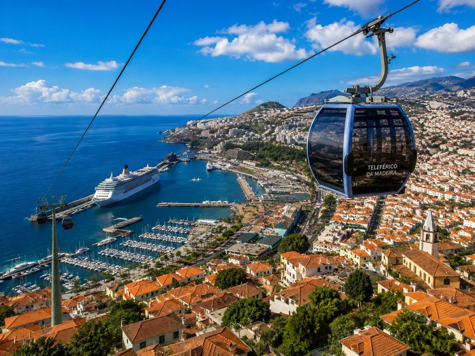

PARAGEM 1
⏱ 20 min aqui
1/6
A carregar rota...

A carregar detalhes da rota...
Abrir no Google Maps
Próxima paragem →
Regresso ao navio
05:00:00
Regresse antes das 16:30
Margem prevista: +45 min
Ver caminho do regresso